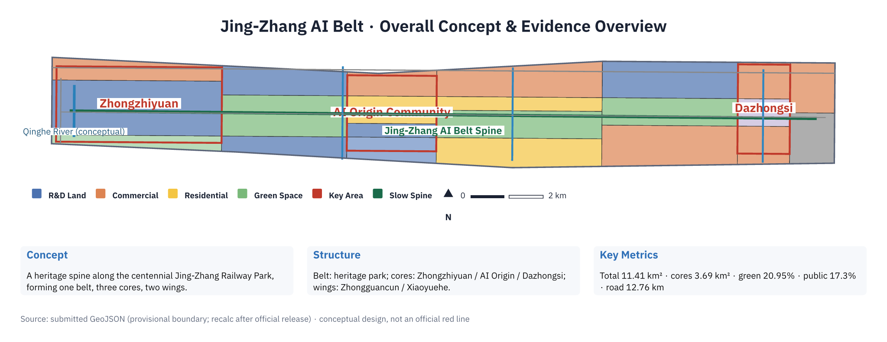
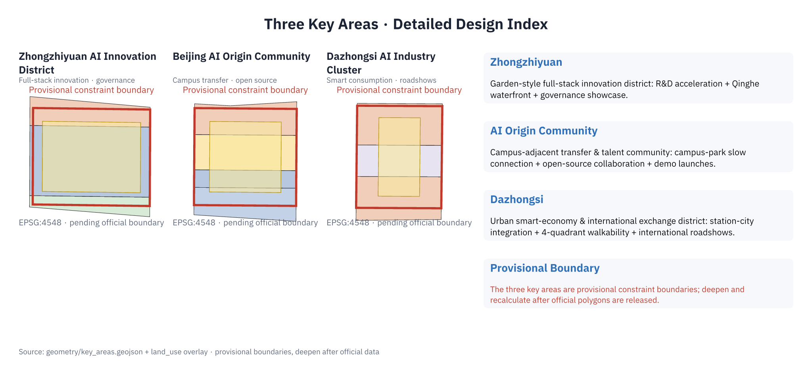
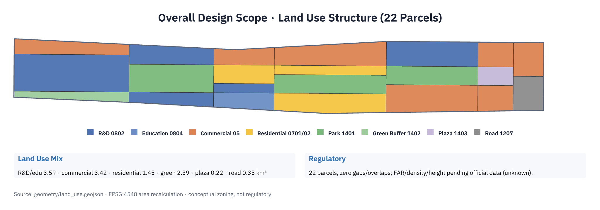
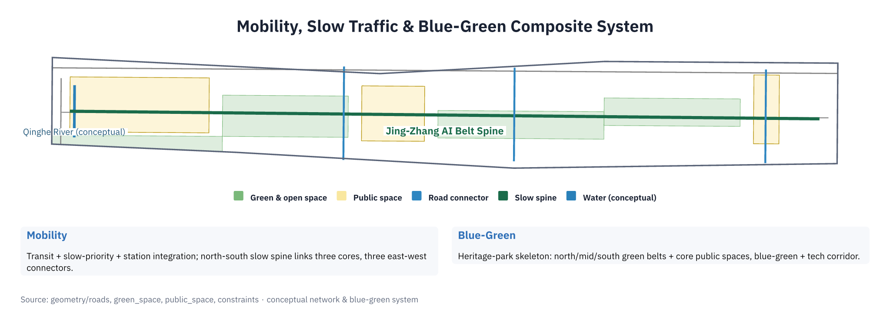
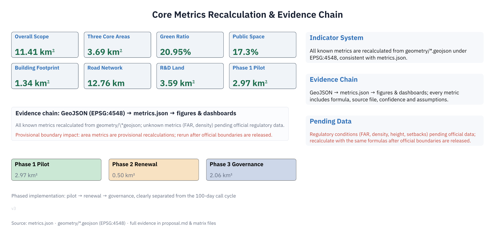

| Level | Area | Boundary |
|---|---|---|
| Coordinated Research Area | ~43.6 km² | provisional |
| Overall Design Area | ~11.41 km² | provisional |
| Key Detailed Design Area | ~3.69 km² | provisional |
| Area | Positioning | Area (~) |
|---|---|---|
| Zhongzhiyuan AI Acceleration Area | Garden-type full-stack innovation district | 1.93 km² |
| Beijing AI Origin Community | University-adjacent incubation & talent community | 1.04 km² |
| Dazhongsi AI Industry Cluster | Urban smart economy & international exchange district | 0.72 km² |



| ID | Project | Phase |
|---|---|---|
| JZ-01 | Heritage park slow-mobility gap stitching | Near-term |
| JZ-02 | Zhongzhiyuan Qinghe innovation frontage | Near-term |
| JZ-03 | Origin university-area transfer street | Mid-term |
| JZ-04 | Dazhongsi station four-quadrant connectivity | Mid-term |
| JZ-05 | AI public services & edge compute nodes | Mid-term |
| JZ-06 | Global AI Week public route | Long-term |
